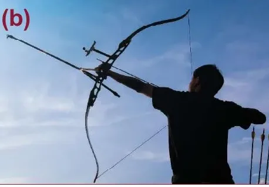

لماذا ترتدّ بعض الكرات عالياً،
وأخرى بالكاد ترتفع عن الأرض؟
في هذا الدرس نكتشف كيف غيّرت المواد الجديدة أدوات الرياضة: من الكرة والقوس والزانة، إلى الرمح والمضرب والحذاء والبدلة والخوذة.
أهداف الحصة الأولى: معامل الارتداد
أن تعرّف الطالبة معامل الارتداد، وتحسبه من السرعتين أو الارتفاعين باستخدام CR = v₂ / v₁ = √(h₂ / h₁).
معيار النجاح: حلّ مسألتين من ثلاث في غلق الهدف حلاً صحيحاً.
أن تفسّر الطالبة لماذا تكون سرعة الارتداد دائماً أقل من سرعة الاصطدام، وتقارن بين المواد بحسب معامل ارتدادها.
معيار النجاح: إجابة صحيحة عن سؤالين من ثلاثة.
سير الحصة (٤٥ دقيقة)
- التهيئة: توقّعي الارتداد٥ د
- الهدف ١: مفهوم معامل الارتداد، والمثال المحلول، ومختبر الكرة + غلق٢٠ د
- الهدف ٢: أين تذهب الطاقة؟ ومقارنة المواد + غلق١٥ د
- الغلق الختامي: كرت الخروج٥ د
توقّعي قبل أن نبدأ
أسقطنا كرة مطاطية من ارتفاع 2 m. إلى أي ارتفاع يمكن أن ترتدّ؟
أقل من 2 m دائماً، لأن الكرة تفقد جزءاً من طاقتها عند كل اصطدام بالأرض.
نقاش سريع للفريقين
تختزن المادّة طاقة عند التمدّد أو الانضغاط. عندما تصطدم الكرة بالأرض تنضغط، ثم تعود إلى حالتها فتنطلق الطاقة وترتدّ.
سؤال للنقاش: لماذا تختار كل رياضة كرة من مادّة مختلفة؟
معامل الارتداد Coefficient of restitution (CR)
يقيس معامل الارتداد نسبة الطاقة المنطلقة عند عودة المادّة إلى حالتها الأصلية.
ترتطم كرة مطّاطية بالجدار بسرعة v₁ لترتدّ بسرعة v₂. تكون سرعة ارتدادها v₂ دائماً أقل من سرعتها v₁، حيث إنّ بعضاً من الطاقة يُفقد دائماً خلال الارتداد.
ويمكن أن يُحدَّد أيضاً من ارتفاع صعود الكرة h₂ بعد إلقائها من على ارتفاع h₁.
CR = v₂ / v₁ = √( h₂ / h₁ )
| الرمز | المعنى | الرمز | المعنى |
|---|---|---|---|
| CR | معامل الارتداد | v₁ | السرعة قبل التصادم |
| h₁ | ارتفاع السقوط قبل التصادم | v₂ | السرعة بعد التصادم |
| h₂ | ارتفاع الارتداد بعد التصادم |
لماذا تكون v₂ دائماً أقل من v₁؟
مثال محلول خطوة بخطوة
لدينا كرة مصنوعة من نوع من المطّاط معامل ارتداده 0.75. ارتدّت الكرة إلى ارتفاع 1.5 m. كم يبلغ الارتفاع الذي أُلقيت منه الكرة؟
مختبر الكرة المرتدّة
- ارتفاع الارتداد الأول h₂
- الارتداد الثاني
- الارتداد الثالث
جرّبي مثال الكتاب: اجعلي معامل الارتداد 0.75، وارتفاع الإسقاط 2.7 m تقريباً، فترتدّ الكرة إلى نحو 1.5 m.
غلق الهدف ١: احسبي معامل الارتداد
✔ معيار النجاح: حلّ مسألتين من ثلاث حلاً صحيحاً.
لماذا لا ترتدّ الكرة إلى الارتفاع نفسه؟
عند كل اصطدام يُفقد جزء من الطاقة، فيكون CR دائماً أقل من 1. وكلما كان معامل الارتداد أكبر، ارتدّت الكرة أعلى.
الطاقة التي تبقى بعد الاصطدام (h₂ / h₁ = CR²):
الطاقة المفقودة في الاصطدام:
قارني بين الحالات
المسي الحالة لتري أثرها:
غلق الهدف ٢: الطاقة والمواد
✔ معيار النجاح: إجابة صحيحة عن سؤالين من ثلاثة.
كرت خروج الحصة الأولى
أهداف الحصة الثانية: قوس الرماية والقفز بالزانة
أن تفسّر الطالبة كيف يخزّن القوس والزانة الطاقة عند الانثناء، وتتتبّع تحوّلات الطاقة في القفز بالزانة.
معيار النجاح: ترتيب تحوّلات الطاقة الثلاثة ترتيباً صحيحاً، وإجابة صحيحة عن سؤالين من ثلاثة.
أن تقارن الطالبة بين مواد صناعة الأسهم والزانات من حيث المميّزات والعيوب.
معيار النجاح: مطابقة ٤ مواد من ٥ مع خصائصها.
سير الحصة (٤٥ دقيقة)
- التهيئة: مراجعة معامل الارتداد٥ د
- الهدف ١: محاكاة القوس، ومراحل القفز بالزانة + غلق٢٠ د
- الهدف ٢: لعبة مواد الأسهم، وتطوّر الزانات + غلق١٥ د
- الغلق الختامي: كرت الخروج٥ د
تذكّري من الحصة الماضية
قوس الرماية: شدّي الوتر وانظري إلى الطاقة
يخزّن قوس الرماية طاقة وضع مرونية عند شدّه، كما يحدث في النابض. وتنتقل هذه الطاقة إلى السهم عند تحرير الوتر، فيندفع بسرعة نحو الهدف. وكلما ازداد انحناء القوس ازدادت الطاقة المختزنة فيه.
الطاقة المختزنة في القوس:
حرّكي المؤشر ثم أطلقي السهم.

القفز بالزانة: من الجري إلى العارضة
طاقة حركية
طاقة كامنة مرونية في الزانة
طاقة وضع (ارتفاع)
الهدف من القفز بالزانة الوصول إلى أقصى ارتفاع. يجري اللاعب مسافة 40 m ثم يضع طرف الزانة في حفرة عمقها 1 m.
غلق الهدف ١: رتّبي تحوّلات الطاقة
المسي البطاقات بالترتيب الصحيح من البداية إلى النهاية:
✔ معيار النجاح: ترتيب التحوّلات الثلاثة صحيحاً، وإجابة صحيحة عن سؤالين من ثلاثة.
مواد صناعة الأسهم: طابقي المادة بوصفها
المسي مادة، ثم المسي الوصف الذي يناسبها (الجدول 1-4 في الكتاب).
* استقامة السهم تعني مدى بقاء جسم السهم مستقيماً دون انحناء أو اعوجاج على امتداده.
كيف رفعت المواد الجديدة الرقم القياسي في القفز بالزانة؟
قيم تقريبية مقروءة من الشكل 7-4 في الكتاب.
المسي مادة لتظهر فترتها على الرسم:
شروط الزانة في المنافسات الأولمبية: أن تكون ناعمة، وقد تكون من مادة واحدة أو مركّبة من مواد متعدّدة، ويمكن أن يكون لها أي طول أو قطر.
غلق الهدف ٢: أيّ مادة؟
✔ معيار النجاح: مطابقة ٤ مواد من ٥ في اللعبة، وإجابة صحيحة عن سؤالين من ثلاثة.
كرت خروج الحصة الثانية
أهداف الحصة الثالثة: الرمح ومضارب التنس
أن تفسّر الطالبة أثر تطوير تصميم الرمح ومواده في الأرقام القياسية، وسبب تغيير لوائح تصميمه عام 1986.
معيار النجاح: إجابة صحيحة عن سؤالين من ثلاثة.
أن تقارن الطالبة بين مواد مضارب التنس (الخشب، الفولاذ والألومنيوم، ألياف الكربون)، وتحدّد اتجاه القوة الذي يكون فيه الخشب قوياً.
معيار النجاح: إجابة صحيحة عن سؤالين من ثلاثة.
سير الحصة (٤٥ دقيقة)
- التهيئة: مراجعة القوس والزانة٥ د
- الهدف ١: مراحل رمي الرمح، وخط زمني، ورسم الأرقام القياسية + غلق١٨ د
- الهدف ٢: قشرة الخشب، وتطوّر مواد المضارب + غلق١٧ د
- الغلق الختامي: كرت الخروج٥ د
تذكّري من الحصة الماضية
الرمح: من الخشب إلى المعدن… ثم لوائح جديدة
يجري اللاعب مسافة 40 m إلى نقطة يُطلق عندها الرمح. الرامي الفائز من يسقط رمحه عند أبعد مسافة. ويتطلّب الرمي سرعة وقوة.
المسي كل محطة لتفتحيها:
ماذا حدث للأرقام القياسية عام 1986؟
قيم تقريبية مقروءة من الشكل 9-4 في الكتاب.
توقّعي: لماذا انخفضت الأرقام القياسية فجأة عام 1986؟
عام 1984 كان الرقم القياسي 104 m، وشكّل سقوطه خطراً على المتنافسين في المضمار. فتطلّبت اللوائح الجديدة عام 1986 تصميماً يسقط فيه الرمح برأسه نحو الأسفل، فانخفض متوسط مسافات الرمي بعشرين متراً تقريباً، وفرض هذا التصميم معايير جديدة للأرقام القياسية.
الرماح من الأمثلة التي أدّت فيها الأدوات والتصاميم الجديدة إلى أرقام قياسية عالية جداً، فكان على الرياضيين تقليلها حفاظاً على السلامة العامة.
غلق الهدف ١: الرمح
✔ معيار النجاح: إجابة صحيحة عن سؤالين من ثلاثة.
مضارب التنس: متى يكون الخشب قوياً؟
صُنع أول مضرب تنس عام 1874 من قطعة صلبة من الخشب. يُعدّ الخشب مادّة قوية وخفيفة الوزن ومرنة، إلا أن الخشب يكون قوياً فقط عندما تكون القوى المؤثّرة عمودية على القشرة، وهو ضعيف على امتداد سطح قشرته.
اختاري اتجاه القوة ثم اضغطي «أثّري بالقوة».
من المهمّ عند استخدام الخشب في صناعة الأجسام الانتباه إلى محاذاة قشرة الخشب. وتختلف القشرة وقوة الخشب باختلاف نوع الأشجار التي استُخرج منها.
تطوّر مواد مضارب التنس
ألياف الكربون: لماذا تفوّقت؟
- القوة
- أقوى بخمس مرات من الفولاذ
- الوزن
- أقل من مضارب الخشب
- التصنيع
- تُنسج لتشكّل نسيجاً يمنح القوة في اتجاهات عديدة، وتوضع على شكل طبقات مع صمغ بلاستيكي
استُخدمت كذلك ألياف الزجاج الشبيهة بألياف الكربون، لكنها ليست في قوّتها وخفّتها.
غلق الهدف ٢: مضارب التنس
✔ معيار النجاح: إجابة صحيحة عن سؤالين من ثلاثة.
كرت خروج الحصة الثالثة
أهداف الحصة الرابعة: الأحذية والبدلات وأدوات الحماية
أن تربط الطالبة كل مادة من مواد الأحذية والبدلات الرياضية باستخدامها، وتفسّر فكرة بدلة جلد القرش.
معيار النجاح: مطابقة ٣ مواد من ٤ مع استخداماتها، وإجابة صحيحة عن سؤالين من ثلاثة.
أن تفسّر الطالبة كيف تقلّل أدوات الحماية من تأثير قوة التصادم بزيادة زمن التصادم، وتصف مكوّنات الخوذة الحديثة.
معيار النجاح: إجابة صحيحة عن سؤالين من ثلاثة.
سير الحصة (٤٥ دقيقة)
- التهيئة: كم نوعاً من الأحذية الرياضية تمتلكين؟٥ د
- الهدف ١: الأحذية، والبدلات وجلد القرش + غلق١٧ د
- الهدف ٢: محاكاة زمن التصادم، والخوذة + غلق١٧ د
- الغلق الختامي: التحدّي النهائي للدرس٦ د
كم نوعاً من الأحذية الرياضية تمتلكين؟
كل فريق يعدّ أنواع الأحذية الرياضية التي يعرفها: للجري، ولكرة السلة، وللتدريب…
الأحذية والبدلات: طابقي المادة أو التصميم باستخدامه
الأحذية العصرية (الشكل 13-4)
مواد البدلات الرياضية
بدلة جلد القرش
لاحظ العلماء في شركة سبيدو أنّ لجلد سمك القرش الكثير من التدرّجات المسنّنة. يسمح هذا السطح لأسماك القرش بأن تسبح بفعالية أكبر وبأن تزيد من سرعتها وتقلّل من الطاقة التي تستخدمها.
غلق الهدف ١: الأحذية والبدلات
✔ معيار النجاح: مطابقة ٣ مواد من ٤، وإجابة صحيحة عن سؤالين من ثلاثة.
يمكنكِ أن تقلّلي من تأثير قوة التصادم بزيادة زمن التصادم
- زمن التصادم
قوة التصادم المؤثّرة في الجسم:
يمكن لأسطح الحماية أن تقلّل من الخدوش، أمّا الحشوات فتزيد من زمن التصادم، وبالتالي تُقلّل من قوة التصادم وتأثيرها السلبي.
خوذة الدرّاجات النارية: تاريخ ومكوّنات
المسي طبقة من الخوذة:
غلق الهدف ٢: أدوات الحماية
✔ معيار النجاح: إجابة صحيحة عن سؤالين من ثلاثة.